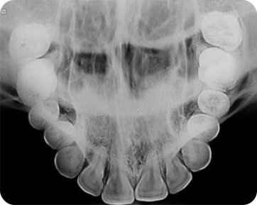
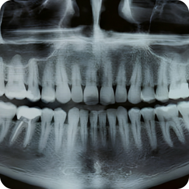
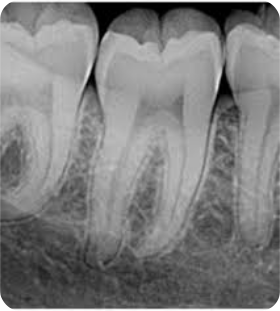

Peridental
ACESSO DETALHADO
Atividade: Fotografias intraorais e radiografias odontológicas.
Data e hora de abertura: 16/05/2025.
Paciente: Juliana Maria Gonçalves
Local do registro: Clínica Odontológica Smiller, Rua Peixoto Melo, N.º34, CEP: 60411-98.
N.º do prontuário: 3875648200
H: 10:34:45
Sexo: F
Fotografias intraorais e radiografias odontológicas.
Foram solicitadas radiografias periapicais dos dentes afetados para avaliar a extensão da cárie e possível envolvimento da polpa dentária. A radiografia revelou lesões de cárie em estágio moderado, com comprometimento da dentina, mas sem sinais claros de infecção pulpar.

Arca Dentária Inferior

Arca Dentária Completa

Incisivos laterais inferiores